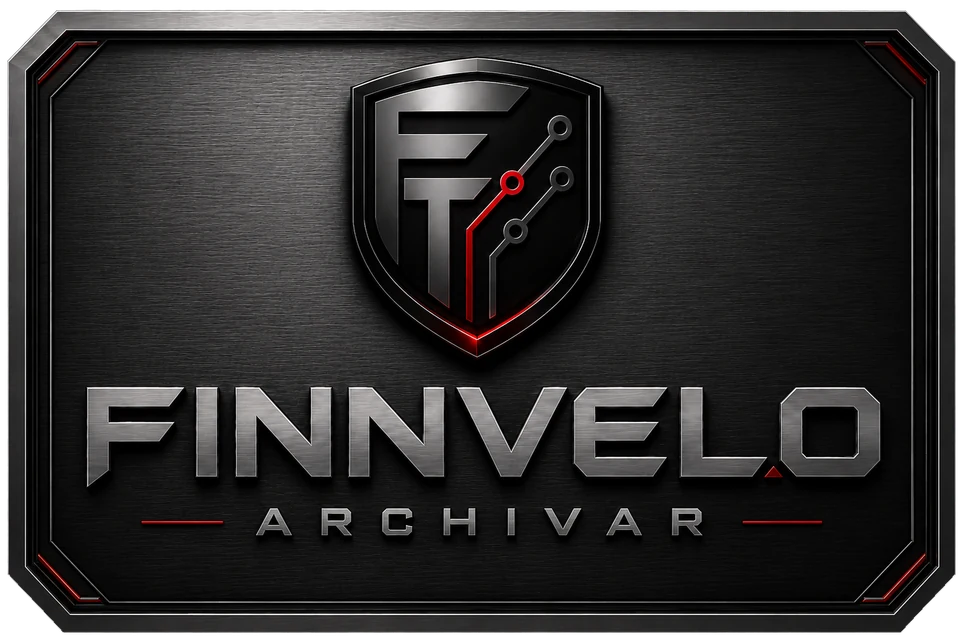
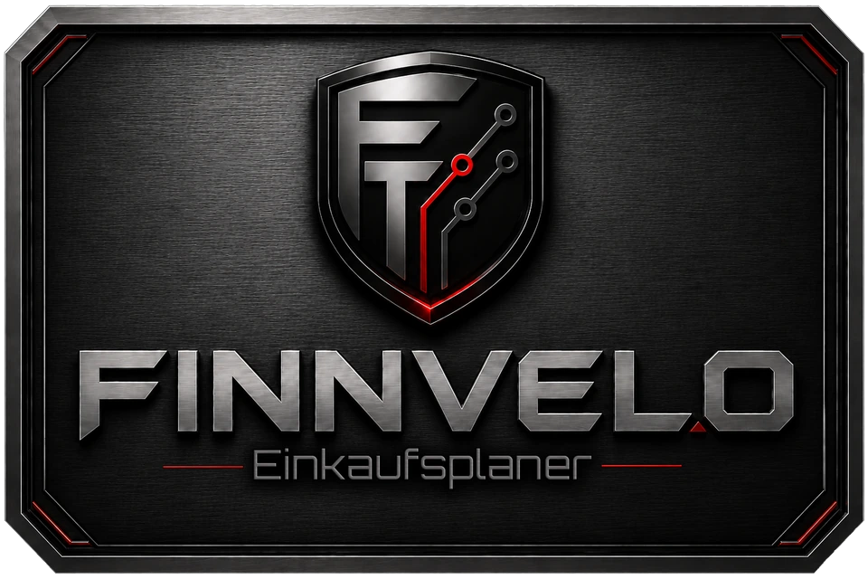
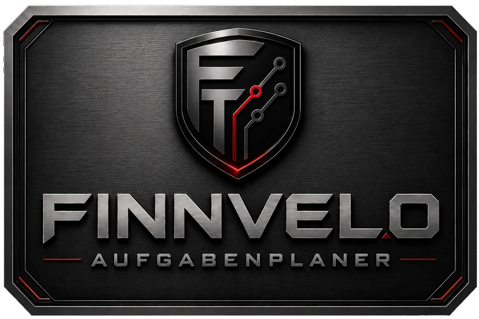
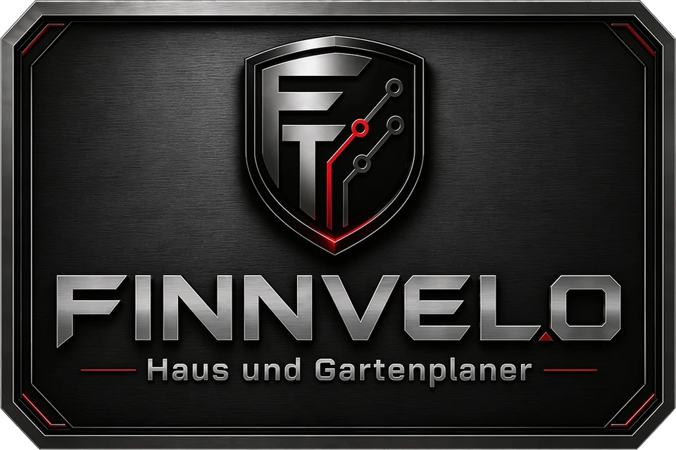
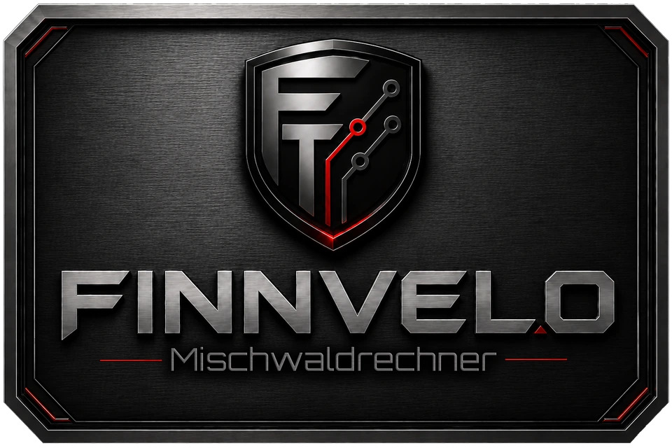
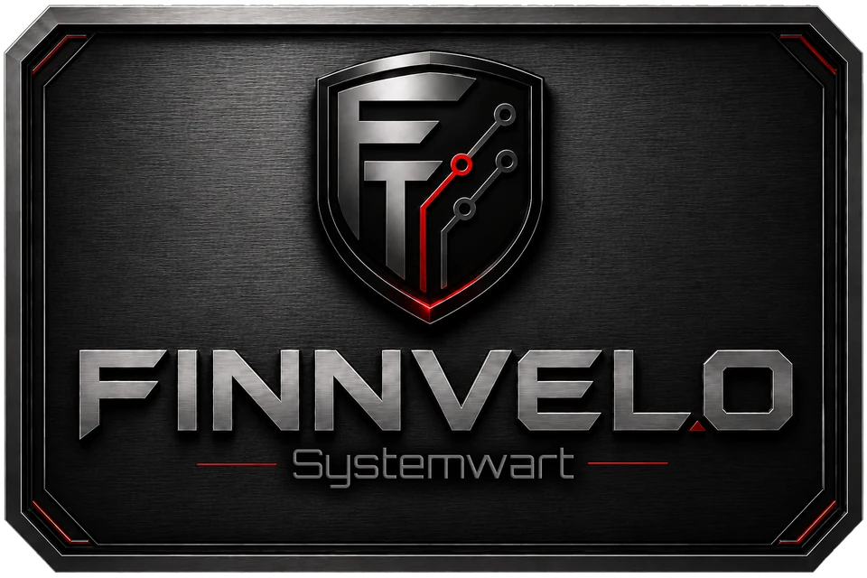
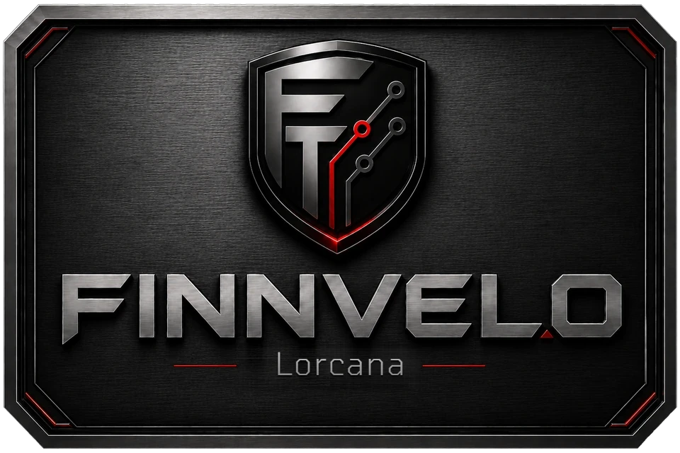

Software · Automatisierung · Produktivität
Finnvelo
Programmwelten.
Programmübersicht
Alle Programme auf einen Blick. Jede Zeile führt zur eigenen Programmseite mit ausführlicher Beschreibung und Download.
Plattform
Thema
 Finnvelo Command Control
Frei belegbares Tastenpult und Makro-Deck für Windows: Programme, Ordner, Webseiten, Systemfunktionen und eigene Makros per Klick oder Tastenkürzel.
Finnvelo Command Control
Frei belegbares Tastenpult und Makro-Deck für Windows: Programme, Ordner, Webseiten, Systemfunktionen und eigene Makros per Klick oder Tastenkürzel.

Finnvelo Archivar Windows-Programm zum Archivieren, Entpacken und strukturierten Kopieren – mit Kopiervorlagen, Auswahlregeln und Kontextmenü.
Verfügbar Finnvelo Einkaufsplaner Gemeinsame Einkaufslisten für Android: rund 1.060 Artikel ab Werk, Sortierung nach Ladenweg und verschlüsselter Abgleich – ohne Konto. Android-App
Finnvelo Lesezeit
Lesetagebuch für Android: Bücher und Hörbücher per Suche oder ISBN-Scan anlegen, den Stapel ungelesener Bücher verwalten und das Lesejahr auswerten.
In Entwicklung
Finnvelo Tourenplaner
Wander-, Lauf- und Radtouren vorschlagen lassen oder selbst planen – mit Navigation, Offline-Karten und GPX-Austausch. Für Android und Windows.
In Entwicklung
Finnvelo Finanzmanager
Haushaltsbuch für Windows: Kontoauszüge, Excel-Tabellen und Fotos handgeschriebener Seiten einlesen – Budgets, Sparziele und Vermögen im Blick.
Android-App
Finnvelo Lesezeit
Lesetagebuch für Android: Bücher und Hörbücher per Suche oder ISBN-Scan anlegen, den Stapel ungelesener Bücher verwalten und das Lesejahr auswerten.
In Entwicklung
Finnvelo Tourenplaner
Wander-, Lauf- und Radtouren vorschlagen lassen oder selbst planen – mit Navigation, Offline-Karten und GPX-Austausch. Für Android und Windows.
In Entwicklung
Finnvelo Finanzmanager
Haushaltsbuch für Windows: Kontoauszüge, Excel-Tabellen und Fotos handgeschriebener Seiten einlesen – Budgets, Sparziele und Vermögen im Blick.

Android-App Finnvelo Aufgabenplaner Aufgaben- und Terminplaner für Android und Windows: Eingabe in einem Satz, Kalender, Erinnerungen und verschlüsselt geteilte Listen. In Entwicklung Finnvelo Medienstudio Kamera, Bildbearbeitung und Videoaufnahme für Windows – mit virtuellen Hintergründen, Greenscreen und Schärfeanzeige.
Android · Windows Finnvelo Haus und Gartenplaner 3D-Planer für Haus, Wohnung und Garten – Grundrisse, Etagen, Dach, anpassbare Möbel und Ego-Ansicht. Läuft im Browser.
Android-App · Windows-Programm Finnvelo Mischwaldrechner Auswertung für das Kartenspiel Mischwald: Punkte zusammenzählen, Rechenweg, Kartenerkennung per Foto und Übersicht aller 116 Karten. In Entwicklung Finnvelo Klarschiff Putzplaner für Android: wiederkehrende Haushaltsaufgaben mit Turnus, zuständiger Person und Erinnerung – gemeinsam in der Familie.
In Entwicklung Finnvelo Systemwart PC-Optimierer für Windows: Altlasten entfernen, Autostart und Dienste zähmen, Treiber prüfen – jeder Eingriff lässt sich zurücknehmen.
Vollversion Finnvelo Lorcana Sammlung, Deckbau und Testpartien für Disney Lorcana: Karten per Kamera erfassen, Decks mit KI-Hilfe bauen, gegen Turnierdecks testen und bei Cardmarket verkaufen. Inoffizielles Fan-Programm.